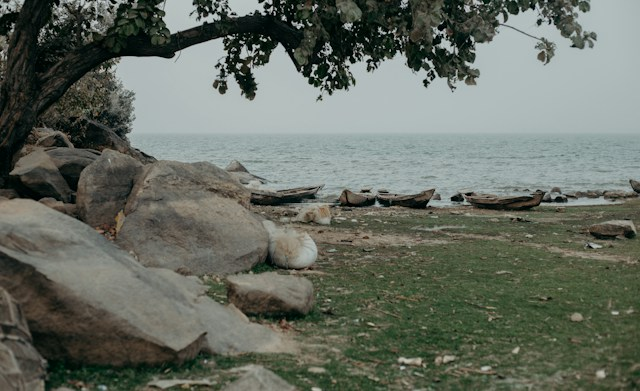

The North Central stretches across the whole width of the country, from the border with Cameroon to that with Benin. In terms of the environment, the zone is dominated by the Guinean forest–savanna mosaic, with the western portion falling into the West Sudanian savanna ecoregion. Plateau State is also named for the Jos Plateau, which lies in the east-central portion of the zone.
The region has a population of about 20 million people, around 11% of the total population of the country. The country's capital of Abuja, which is in the Federal Capital Territory, as well as Ilorin and Jos, are the most populous cities in the North Central, as well as the sixth, seventh, and eighth most populous cities in Nigeria.

Kwara
Kogi
Nasarawa
Niger
Benue
Plateau
North East
Geographically, the North East is the largest geopolitical zone in the nation, covering nearly one-third of Nigeria's total area. In terms of the environment, the zone is primarily divided between the semi-desert Sahelian savanna and the tropical West Sudanian savanna ecoregions.
The region has a population of about 26 million people, around 12% of the total population of the country. Maiduguri and Bauchi are the most populous cities in the North East as well as the fifteenth and seventeenth most populous cities in Nigeria. Other large northeastern cities include (in order by population) Bauchi, Yola, Mubi, Gombe, Jimeta, Potiskum, Jalingo, Gashua, and Bama.
It is known for its livestock and the growth of crops which contribute greatly to the economy of the country. The region is densely populated as compared to the southern region of the country.
Adamawa
Bauchi
Borno
Gombe
Taraba
Yobe
North West
The North West is a region of Nigeria. It is native homeland of Hausa people with the second largest tribe being Fulani. It is composed of the following states: Jigawa, Kaduna, Kano, Katsina, Kebbi, Sokoto, and Zamfara.
The zone stretches along the Atlantic seaboard from the international border with Benin Republic in the west to the South South in the east with the North Central to the north. The South West is split with the Central African mangroves in the coastal far south while the major inland ecoregions are the Nigerian lowland forests ecoregion in the south and east along with the Guinean forest–savanna mosaic ecoregion in the drier northwest. The weather conditions vary between the two distinct seasons in Nigeria; the rainy season (March - November) and the dry season (November - February). The dry season is also the bringer of the Harmattan dust; cold dry winds from the northern deserts blow into the southern regions around this time
South East is the smallest geopolitical zone, it contributes greatly to the Nigerian economy due to oil and natural gas reserves along with a growing industrialized economy. The region has a population of about 36 million people, around 18% of the total population of the country. Aba and Enugu are the most populous cities in the South East as well as the tenth and fourteenth most populous cities in Nigeria. Other large southeastern cities include (in order by population) Onitsha, Umuahia, Owerri, Nnewi, Awka, and Abakaliki.
The South-South zone of Nigeria is situated at the southern end of the country occupying 84,587km2 which is approximately 9.2% of Nigeria total land area of 923,768km2. The region is Delta in nature and characterized by mangrove forests from the Atlantic Ocean and equatorial rain forest as you move north wards.

.jpg)